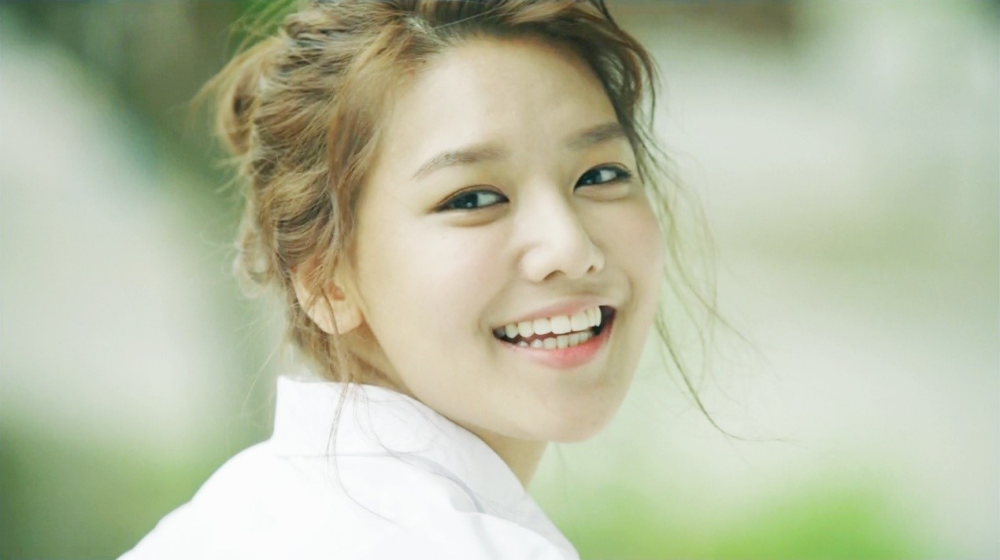

| 少女时代-The Boys | |
| 少女时代-Catch Me If You Can |
金泰妍（Taeyeon），1989年3月9日出生于韩国全罗北道全州市，韩国女歌手、主持人，女子演唱团体少女时代成员之一
2004年在第八届SM青少年选拔大赛歌王中夺得第一名，进入韩国SM娱乐有限公司开始练习生生涯。2007年8月以演唱团体少女时代正式出道。2008年为韩国KBS电视台电视剧《快刀洪吉童》演唱了主题曲《如果》，并于同年12月凭借《听得见吗》获第23届韩国金唱片大奖人气奖。2012年与黄美英、徐珠贤组成了少女时代的临时子团“TaeTiSeo”。2013年为电影《大明猩》献唱主题曲《Bye》；同年在“百大最美脸蛋”2013年票选中获得第九名。2014年2月发布歌曲《Set Me Free》。2015年2月与刘逸云合作歌曲《Shake That Brass》
李顺圭（Sunny）本名李纯揆，1989年5月15日出生于美国加利福利亚州洛杉矶市，韩国女歌手、主持人，女子演唱团体少女时代成员之一。
李顺圭原本在其父亲的经纪公司训练了9年，准备以"TINTOP"出道时遇上经纪公司倒闭，未能出道。2007年，她在亚由美的推荐下参加韩国SM娱乐有限公司的选秀，成为旗下练习生；同年8月以演唱团体少女时代正式出道。2009年参与综艺节目《青春不败》。2012年参与综艺节目《青春不败2》；同年首次参演音乐剧《Catch me if you can》 。2014年参演音乐剧《Singing in the rain》；同年9月加入综艺节目《Roommate》第二季，成为固定成员并参与录制；12月凭其主持的广播节目《FM Date》获得“2014MBC放送演艺大赏”广播部门新人奖。
黄美英（Tiffany），1989年8月1日出生于美国加利福尼亚州旧金山市，韩国女歌手、主持人，女子演唱团体少女时代成员之一。
2004年，黄美英在洛杉矶参加“S.M. casting System”选秀后加入韩国SM娱乐有限公司成为旗下练习生。2007年8月以演唱团体少女时代正式出道。2009年凭借歌曲《By Myself》入围“第11届Mnet亚洲音乐大奖”最佳OST奖提名。2011年与权俞利共同担任主持的节目《音乐中心》获得“2011MBC放送演艺大奖”MC特别奖。2012年加入节目《音乐中心》担任主持人；同年4月与金泰妍、徐珠贤组成少女时代的临时子团“TaeTiSeo”。2013年为电视剧献唱主题曲《一步》。2015年2月为电视剧《BLOOD》献唱OST《Only One》。
徐珠贤（Seohyun）本名徐朱玄，1991年6月28日出生于韩国首尔，韩国女歌手、演员、主持人，女子演唱团体少女时代成员之一。
2003年在韩国首尔乘坐地铁时被韩国SM娱乐有限公司星探发掘，开始练习生生涯。2007年8月以演唱团体少女时代正式出道。2010年2月与演唱组合CNBLUE成员郑容和共同固定出演MBC综艺节目《我们结婚了》；同年6月首次为电视剧《金首露》演唱插曲《痛也没关系》。
2012年2月加入韩国MBC电视台节目《音乐中心》并担任主持人；同年4月与金泰妍、黄美英组成少女时代的临时子团"TaeTiSeo"。2013年9月参演韩国SBS电视剧《热爱》。2014年1月首次主演音乐剧《拥抱太阳的月亮》 ；同年11月主演音乐剧《乱世佳人》。
金孝渊（Hyoyeon），1989年9月22日出生于韩国仁川广域市，韩国女歌手、舞者、主持人，女子演唱团体少女时代成员之一。
2000年加入韩国SM娱乐有限公司选秀后成为旗下练习生。2004年赴中国北京留学，进修汉语。2007年8月以演唱团体少女时代正式出道。2012年参与综艺节目《青春不败2》担任嘉宾； 同年10月与SM公司艺人李赫宰、刘宪华、李泰民、金钟仁和鹿晗组成临时组合Younique Unit，并发行歌曲《Maxstep》。2013年加入舞蹈节目《Dancing 9》，担任导师。2014年7月28日以嘉宾身份在首尔出席”四川省人民政府代表团访韩”恳谈会。
权俞利（Yuri），1989年12月5日出生于韩国高阳市，韩国女歌手、演员、主持人，女子演唱团体少女时代成员之一。
2001年在首尔参加首届韩国SM娱乐有限公司青少年选拔赛获“最佳舞蹈本赏”后成为旗下练习生。2007年8月以演唱团体少女时代正式出道。2009年担任音乐节目“MBC音乐中心”的主持人，多次主持年末庆典与演唱会。2012年首次以演员身份主演电视剧《时尚王》，获得韩国SBS演技大奖新星奖与第49届百想艺术大赏电视类最佳人气女演员赏。2013年10月31日参演的电影《No Breathing》上映 ，并为该电影献唱歌曲《Bling Star》，获得第50届韩国百想艺术大赏电影类最佳人气女演员赏。

崔秀英（Soo Young），1990年2月10日出生于韩国京畿道光州市，韩国女歌手、演员、主持人，女子演唱团体少女时代成员之一。
2000年在首尔参加韩国SM娱乐有限公司选秀被发掘，随后进入该公司开始练习生生涯。2002年离开公司自行前往日本参加选秀试镜会，取得韩国组优胜，并与日本组优胜者高桥麻里奈共同组成双人女子双人演唱组合Route 0，在日本出道。2003年组合解散，崔秀英重返SM公司继续练习生生涯。2007年8月以演唱团体少女时代正式出道。
2012年首次以演员身份主演电视剧《第三医院》。2013年5月参演电视剧《恋爱操作团：Cyrano》；同年获第七届韩国SBS演艺大赏MC新人奖。2014年主演连续剧《我人生的春天》并为该剧献唱OST《银莲花》，凭借该剧获得“2014MBC演技大赏”优秀演技奖。
林允儿（Yoona），1990年5月30日出生于首尔，韩国女歌手、演员，女子演唱团体少女时代成员。
2002年，林允儿参加韩国SM娱乐有限公司试镜会，进入该公司当练习生。2007年8月5日以演唱团体少女时代正式出道。
2008年在电视连续剧《你是我的命运》担任女主角，凭借该剧获得第45届百想艺术大赏最佳新人女演员奖。2012年主演电视剧《爱情雨》，首次饰演两个角色。2013年主演《总理和我》，凭借该剧获得2013KBS演技大赏迷你系列剧优秀演技奖。2015年参演中国电视剧《武神赵子龙》。